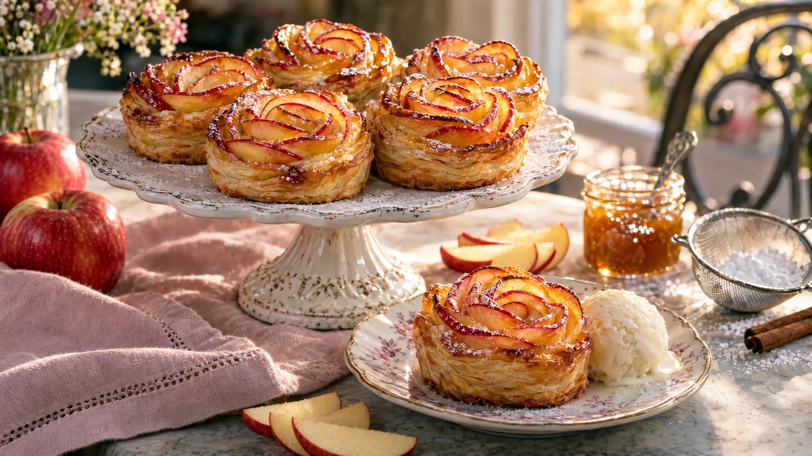

RESTFEST · RECEPTFika & bakning · Dessert · Mingelmat & tilltugg
Äppelrosor i smördeg med kanel
En rulle smördeg, två röda äpplen och en sked sylt. Tunna äppelskivor rullas ihop med smördegen till rosor, där de röda skalkanterna blir kronblad. De gräddas gyllene och pudras med florsocker. Ser ut som från ett franskt konditori.
- Förberedelse
- 30 min
- Tillagning
- 40 min
- Portioner
- 6 rosor
- Nivå
- Medelsvårt
 Det här behöver du
Det här behöver du
Tryck på + vid det du behöver köpa.
Till servering
Gör så här
- Sätt ugnen på 190 grader. Smörj 6 hål i en muffinsplåt.
- Dela äpplena på mitten och skär ut kärnhusen. Skal ska sitta kvar. Skär halvorna i tunna halvmånar, ca 2 mm.
- Lägg äppelskivorna i en skål med citronsaft och vatten så att de täcks. Värm i mikron i 2–3 minuter, eller sjud dem i en kastrull i 2 minuter, tills de är mjuka och böjliga. Låt rinna av på hushållspapper.
- Värm sylten med 1 msk vatten så att den blir lättare att bre. Blanda socker och kanel.
- Rulla ut smördegen och skär 6 remsor på längden, ca 4 cm breda.
- Bred ett tunt lager sylt på varje remsa och strö över lite kanelsocker.
- Lägg äppelskivorna omlott längs remsans övre halva, med skalkanten uppåt så att den sticker upp ca 1 cm över degkanten.
- Vik upp nedre halvan av degen över äpplenas nedre del. Rulla ihop remsan löst från ena kortsidan till en ros och tryck fast änden.
- Ställ rosorna i muffinsplåten. Grädda i nedre delen av ugnen i 35–40 minuter, tills degen är gyllene och genomgräddad även i mitten. Lägg folie över efter 20 minuter om äppelkanterna mörknar för snabbt.
- Låt rosorna svalna i plåten i 5 minuter innan du lyfter ur dem.
Dekoration och servering
- Pudra florsocker genom en sil precis före servering, så att det lägger sig som frost på kronbladen.
- Pensla gärna äppelkanterna med lite uppvärmd sylt direkt efter gräddningen, så att de blir blanka.
- Servera ljumma på ett tårtfat, eller en och en på assietter med en kula vaniljglass.
- Rosorna är godast samma dag, medan degen är frasig.
Mått och ugnstemperaturer
Måtten är svenska (dl, msk, tsk, krm). Ugnstemperaturerna gäller vanlig ugn med över- och undervärme; med varmluft, sänk med 20 grader.